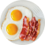
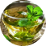
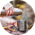

О нас
начните заботу о своём здоровье
Преимущества
Коллаген
Anti-age белок поддерживает красоту волос, кожи, и ногтей
Аминокислоты
20 аминокислот отвечают за обмен веществ, иммунитет и настроение
Ca, Mg, Fe
Укрепляют суставы, обеспечивают тонус и энергию на целый день
Минералы
7 минералов для поддержки нервной системы и насыщения костной ткани
10К покупателей
Более 10 000 человек каждый день становятся здоровее вместе ProBulion и покупают бульоны снова и снова
>2 покупок
Более 90% клиентов заказывают бульоны более 2-х раз, каждый второй покупатель остается с нами
5к+ отзывов
Более 5 000 положительных отзывов оставили покупатели на Озон, Яндекс и других площадках
Попробуйте Царь-бульон
Позаботьтесь о здоровье
Выбрать
Как все начиналось
15 гр коллагена и 20 аминокислот помогут вам в оздоровлении кишечника и нормализации обмена веществ, стимулируют выработкку желудочного сока, а также уменьшат механическое воздействие пищи на слизистые оболочки кишечника.
Выбрать бульон
- Лучший способ укрепить иммунитет — наладить работу ЖКТ.
- Пейте ProBulion за 20 минут до завтрака ежедневно.
Приготовление костного бульона
Костный бульон ProBulion продлевает ощущение сытости, подавляет голод и является прекрасным блюдом для диеты. В ProBulion нет углеводов и очень мало калорий, поэтому вы можете есть его в любом количестве по вашей потребности.
Выбрать бульон
- LCHF
- Интервальное голодание
- Keto
- Спортивная диета
- Paleo
- АИП

Отбор ингредиентов
Пейте костный бульон натощак за 20 минут до завтрака, чтобы усвоить максимум полезных свойств продукта
Запекание
Чашка горячего ароматного бульона — это отличная здоровая альтернатива кофе

Томление
Тёплый костный бульон можно пить даже в жару, во избежание перегрева организма и переедания

Ручная упаковка
Разогрейте бульон дома, добавьте в него немного сушеной зелени, залейте в термос и возьмите с собой
Контроль качества
Легко разогреть в микроволновке, аромат бульона очень деликатный и не помешает окружающим
Бизнес с любовью
Пейте тёплый ProBulion и насыщайтесь полезными микроэлементами, белком и аминокислотами